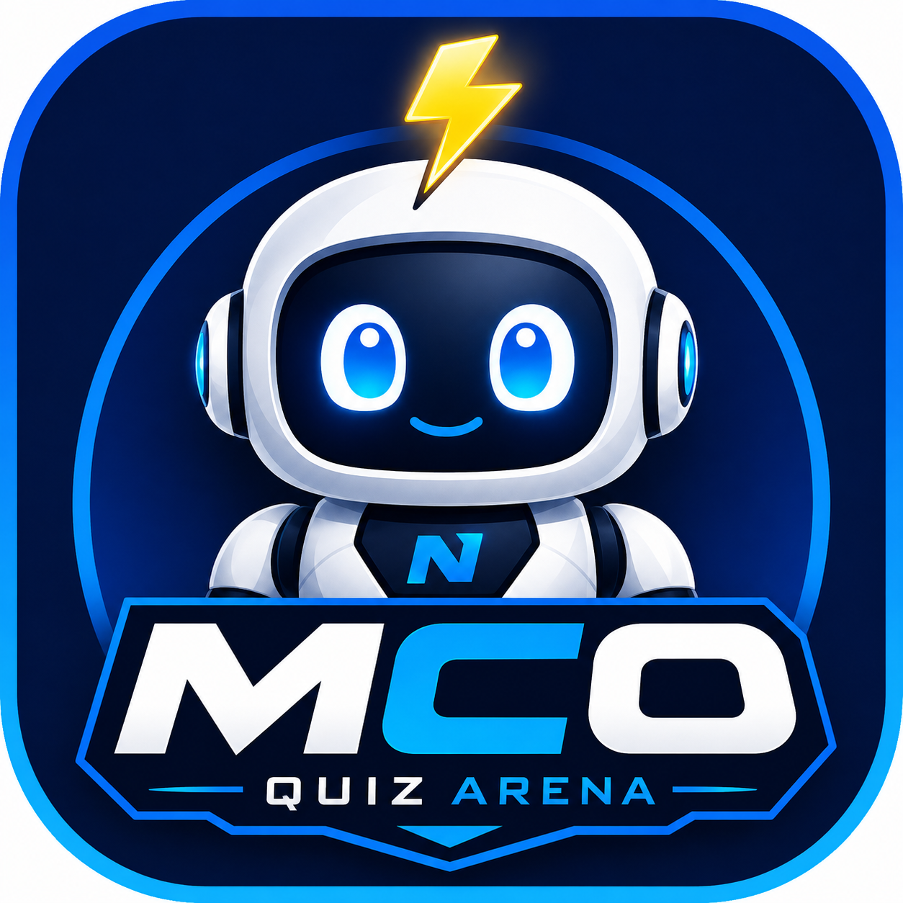

LIVE EN CLASSE
Tu pilotes, ils participent.
QR code, réponses smartphone, correction au bon moment, classement et télécommande comme sur PowerPoint.
CQ98F
▦
34 connectés
Quiz live, leçons, fiches de révision, suivi de progression et pilotage pédagogique dans une seule expérience pensée pour la classe.

QR code, réponses smartphone, correction au bon moment, classement et télécommande comme sur PowerPoint.
Chaque élève retrouve uniquement les contenus ouverts pour sa classe.
Repère rapidement les notions faibles et les élèves à accompagner.
Compte élève, progression, avatar et révision adaptée à son parcours.